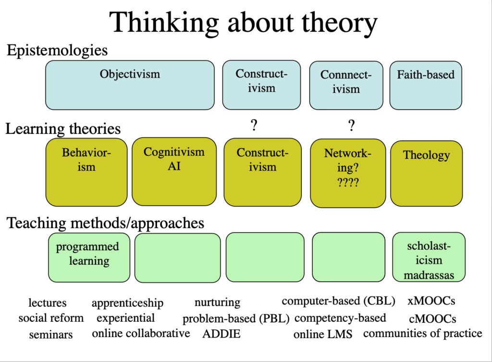

2.8 Resumo



Escolhi apenas algumas abordagens epistemológicas que influenciam o ensino e a aprendizagem, mas poderia ter escolhido muitas outras. As teologias refletem outra abordagem epistemológica, baseada na fé. Elementos do escolasticismo ainda podem ser encontrados em universidades de elite como Oxford e Cambridge, particularmente em seus sistemas de tutoria.
Pode-se perceber, portanto, que existem diferentes epistemologias que influenciam o ensino hoje. Além disso, para a consternação e confusão de muitos estudantes, os próprios professores têm posições epistemológicas diferentes, não apenas entre disciplinas distintas, mas às vezes dentro de uma mesma disciplina. Por exemplo, áreas temáticas como psicologia e economia podem conter diferentes bases epistemológicas em partes distintas do currículo: a estatística é validada de forma diferente da análise freudiana ou dos fatores comportamentais que influenciam o comportamento do investidor.
As posições epistemológicas raramente são discutidas explicitamente com os estudantes, nem sempre são consistentes mesmo dentro de uma disciplina e não são mutuamente exclusivas. Por exemplo, um professor pode optar deliberadamente por usar uma abordagem mais objetivista com estudantes iniciantes e depois passar para uma abordagem mais construtivista quando os estudantes tiverem aprendido os fatos e conceitos básicos de um tópico por meio da abordagem objetivista. Mesmo dentro de uma mesma aula, o professor pode mudar de posição epistemológica, o que frequentemente confunde os estudantes.
Neste ponto, não estou tomando partido (embora eu prefira, em geral, uma filosofia mais construtivista). Podem ser apresentados argumentos a favor ou contra qualquer uma dessas posições epistemológicas. No entanto, precisamos estar cientes de que o conhecimento e, consequentemente, o ensino não são conceitos puros e objetivos, mas sim impulsionados por diferentes valores e crenças sobre a natureza do conhecimento.
Também se argumenta hoje que o conhecimento acadêmico está se tornando redundante e está sendo ou será substituído pela aprendizagem em rede ou por uma aprendizagem mais aplicada. No entanto, defendi que há fortes razões para sustentar e desenvolver ainda mais o conhecimento acadêmico, mas com foco tanto no desenvolvimento de competências quanto na aprendizagem de conteúdos.
Diferentes teorias da aprendizagem refletem diferentes posições sobre a natureza do conhecimento. Com a possível exceção do conectivismo, existe alguma forma de evidência empírica para apoiar cada uma das teorias de aprendizagem descritas neste capítulo. No entanto, embora as teorias sugiram maneiras diferentes pelas quais todas as pessoas aprendem, elas não dizem automaticamente aos professores como ensinar. De fato, as teorias do behaviorismo, cognitivismo e construtivismo foram todas desenvolvidas fora da educação, em laboratórios experimentais, na psicologia, na neurociência e na psicoterapia. Os educadores tiveram de descobrir como passar da posição teórica para a prática de aplicação dessas teorias dentro de uma experiência educacional. Em outras palavras, tiveram de desenvolver métodos de ensino que se apoiassem em tais teorias de aprendizagem.

Um elemento de áudio foi excluído desta versão do texto. Você pode ouvi-lo on-line aqui: https://pressbooks.bccampus.ca/teachinginadigitalagev2/?p=78
O próximo capítulo examina uma série de métodos de ensino que foram desenvolvidos, suas raízes epistemológicas e suas implicações para o ensino na era digital.
Referência
Entwistle, N. (2010) ‘Taking Stock: An Overview of Research Findings’ in Christensen Hughes, J. and Mighty, J. (eds.) Taking Stock: Research on Teaching and Learning in Higher Education Montreal and Kingston: McGill-Queen’s University Press
Para saber mais sobre a relação entre epistemologias, teorias da aprendizagem e métodos de ensino, veja:
Bates, T. (2015) Thinking about theory and practice, Open Learning and Distance Education Resources, 29 de julho
Atividade 2.8 Escolhendo uma teoria de aprendizagem
Entwistle (2010) afirma:
‘Há algumas perguntas importantes a serem feitas quando se considera quanto peso atribuir às evidências ou quão valiosa uma teoria será para a pedagogia. Por exemplo:
- A teoria é derivada de dados ou observações em um contexto educacional?
- A teoria é apresentada em uma linguagem facilmente inteligível para os professores?
- Os aspectos identificados como influenciadores da aprendizagem podem ser facilmente alterados [pelo professor]?
- A teoria tem implicações diretas para o ensino e a aprendizagem [no contexto específico em que você trabalha]?
- Quão realistas e práticas são as sugestões?
- A teoria irá despertar novas ideias sobre o ensino?
Não basta que uma teoria pedagógica simplesmente explique como as pessoas aprendem; ela também tem que fornecer implicações claras sobre como melhorar a qualidade e a eficiência da aprendizagem.‘
Usando os critérios de Entwistle e seu próprio conhecimento e experiência prática de ensino, responda às perguntas abaixo.
1. Qual teoria de aprendizagem você prefere e por quê? Indique qual é a principal disciplina que você leciona.
2. Sua forma de ensino preferida se alinha com alguma dessas abordagens teóricas? Descreva algumas das atividades que você realiza ao ensinar que se 'encaixam' nessa teoria. Consegue pensar em outras atividades possíveis que poderia usar agora dentro desse framework teórico de ensino?
3. Seu ensino geralmente combina teorias diferentes — às vezes behaviorista, às vezes cognitiva, etc.? Se sim, quais são as razões ou contextos para adotar uma abordagem específica em detrimento de outra?
4. Quão úteis são essas teorias em termos de prática docente? Na sua opinião, são apenas jargões ou teorizações inúteis, ou 'rótulos' de práticas comumente compreendidas, ou fornecem diretrizes sólidas sobre como você deve ensinar?
5. Como você acha que as novas tecnologias digitais, como as mídias sociais, afetam essas teorias? As novas tecnologias tornam essas teorias redundantes? O conectivismo substitui outras teorias ou apenas adiciona outra forma de encarar o ensino e a aprendizagem?
Feedback a ser incluído.
Principais conclusões
1. O ensino é uma ocupação altamente complexa, que precisa se adaptar a uma grande variedade de contextos, temas e aprendizes. Não se presta a generalizações amplas. No entanto, é possível fornecer diretrizes ou princípios baseados em boas práticas, teoria e pesquisa, que devem ser adaptados ou modificados às condições locais.
2. Nossas crenças e valores subjacentes, geralmente compartilhados por outros especialistas em um domínio de conhecimento, moldam nossa abordagem de ensino. Essas crenças e valores subjacentes são frequentemente implícitos e muitas vezes não são compartilhados diretamente com nossos estudantes, embora sejam vistos como componentes essenciais para se tornar um 'especialista' em uma determinada área.
3. Defende-se que o conhecimento acadêmico é diferente de outras formas de conhecimento e é ainda mais relevante hoje na era digital.
4. No entanto, o conhecimento acadêmico não é o único tipo de conhecimento importante na sociedade atual e, como professores, temos de estar cientes de outras formas de conhecimento e de sua importância potencial para nossos estudantes, garantindo que forneçamos a gama completa de conteúdos e competências necessários para os estudantes na era digital.